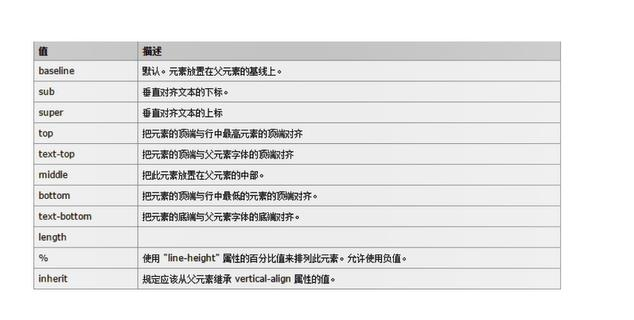

一.中间对齐
(1).行内块inline-block元素有默认属性
1.
vertical-align: baseline; 基线对齐(默认)
middle; 中间对齐
2.
verticle-align常和display:inline-block一起用
3.
表格对此属性敏感

(2).块block元素 中间对齐
line-height: 父元素高度;
二.CSS可见性
overflow: hidden; 将溢出部分隐藏
display: none; 将元素隐藏(不占位置)
display: block; 将元素显示(和js配合)
e.g.鼠标放上去才显示的导航栏
visibility: hidden; 将元素隐藏(占位置)
 文字标题
文字标题